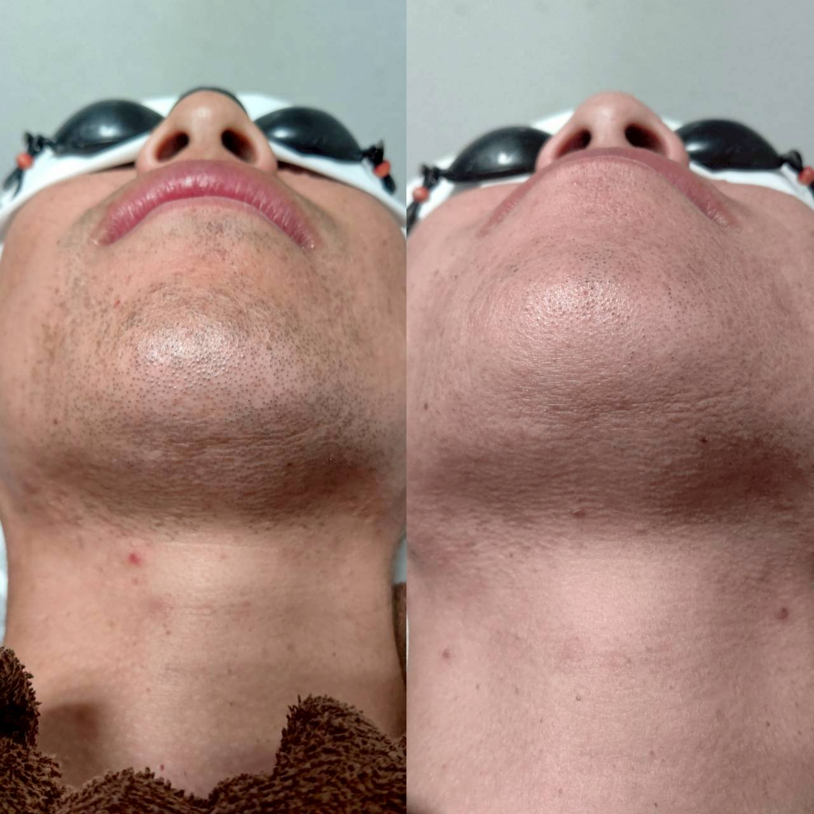

VIO脱毛、施術当日はどんな流れで進む?

VIOの脱毛を検討している男性のお客様から、「施術当日は具体的にどんな流れになるのですか」というご質問をいただくことがあります。デリケートな部位だからこそ、事前に流れを知っておきたいというお気持ちはよく分かります。
当日は、まずカウンセリングシートの確認とともに、施術部位や体調に変化がないかを確認します。そのうえで、個室にてタオルなどで必要以上に露出しない配慮をしながら、パーツごとに順番に照射を進めていきます。
施術中に痛みや違和感が強い場合は、その場でスタッフにお伝えいただければ照射レベルを調整しますので、無理に我慢していただく必要はありません。初めての方ほど緊張されることが多いですが、必要な範囲だけを手際よく進めるよう心がけています。
効果や感じ方には個人差があります。VIOの施術に不安がある方は、当日の流れも含めて無料カウンセリングで事前にご説明しますので、気になる点は遠慮なくお尋ねください。